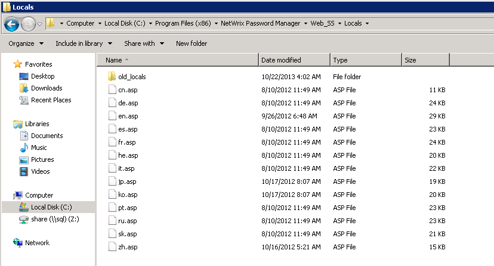
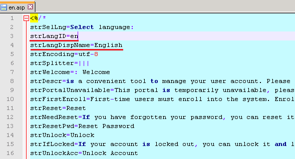
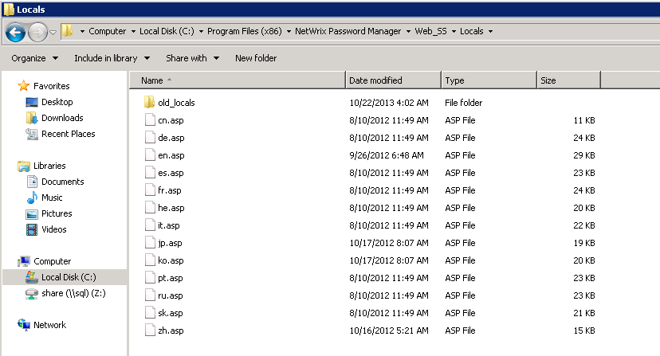
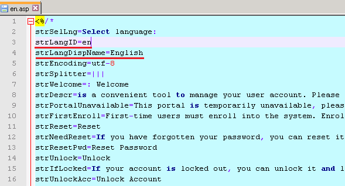

There is an option to select the language of the Self-Service portal, but there is no
language I need in the list. How can I add the language I need to the list?
Each language has a separate localization file. Localization files are stored in the Web_SSLocals folder in the program installation directory (by default - C:Program Files (x86)Netwrix Password ManagerWeb_SSLocals) 
To add a language, create a copy of en.asp, then rename it to %language code%.asp and edit. First of all set : strLangID=%language code% (NOTE. Must correspond with the asp file name) strLangDispName=%language name%  Then substitute all English phrases with their equivalents in the desired language. After you finish, save changes and execute iisreset from command line. The language will be added to the list automatically Also take a look at KB659 for more details about localization files.
Each language has a separate localization file. Localization files are stored in the Web_SSLocals folder in the program installation directory (by default - C:Program Files (x86)Netwrix Password ManagerWeb_SSLocals) 
To add a language, create a copy of en.asp, then rename it to %language code%.asp and edit. First of all set : strLangID=%language code% (NOTE. Must correspond with the asp file name) strLangDispName=%language name%  Then substitute all English phrases with their equivalents in the desired language. After you finish, save changes and execute iisreset from command line. The language will be added to the list automatically Also take a look at KB659 for more details about localization files.